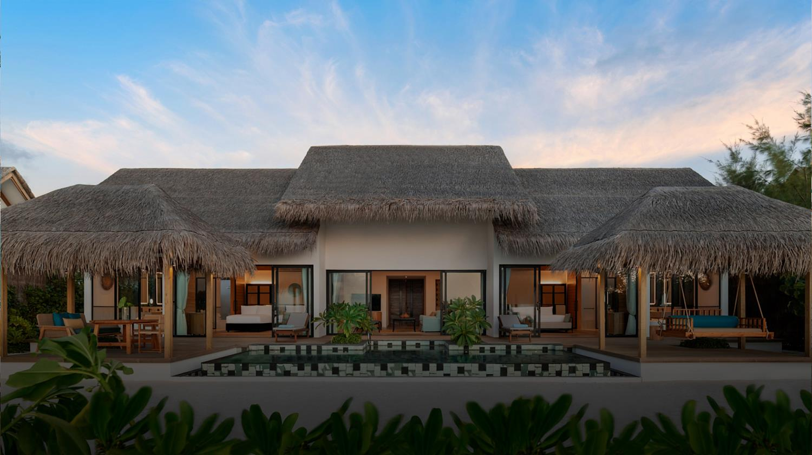
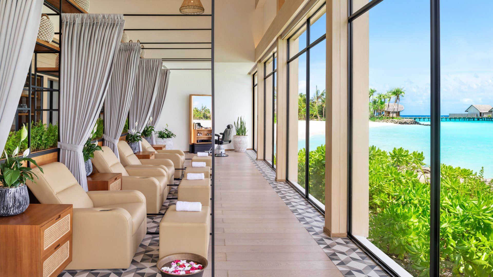
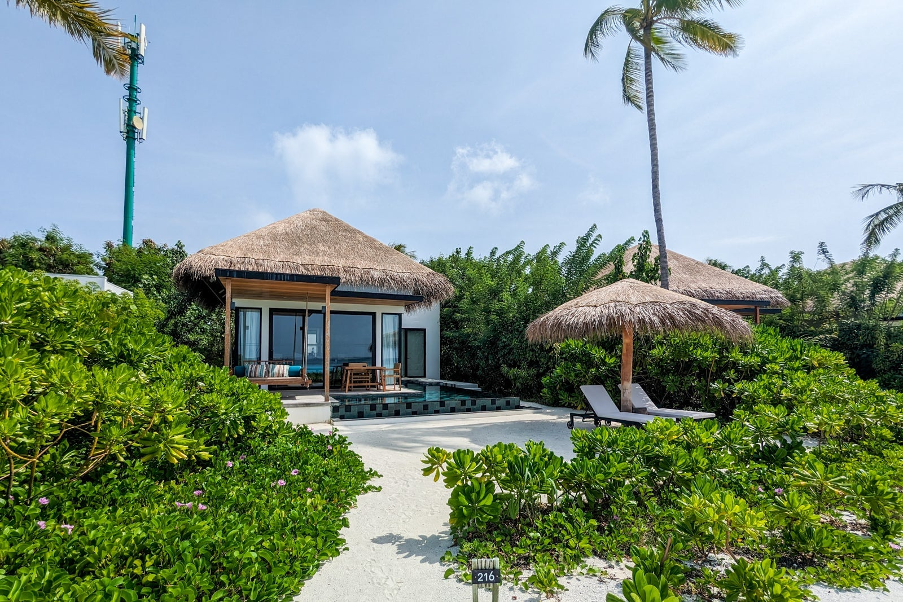
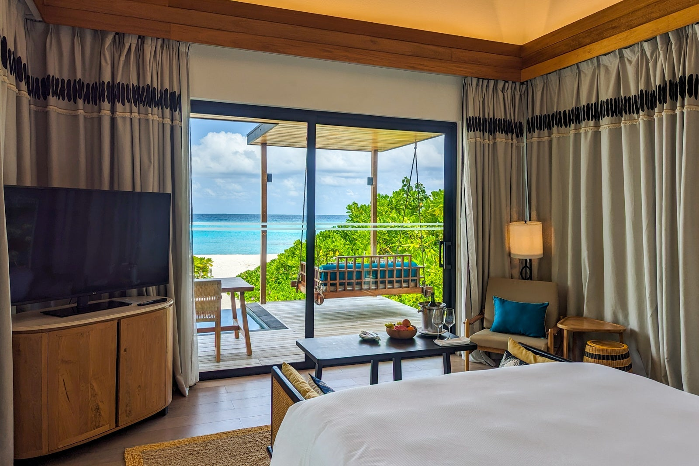
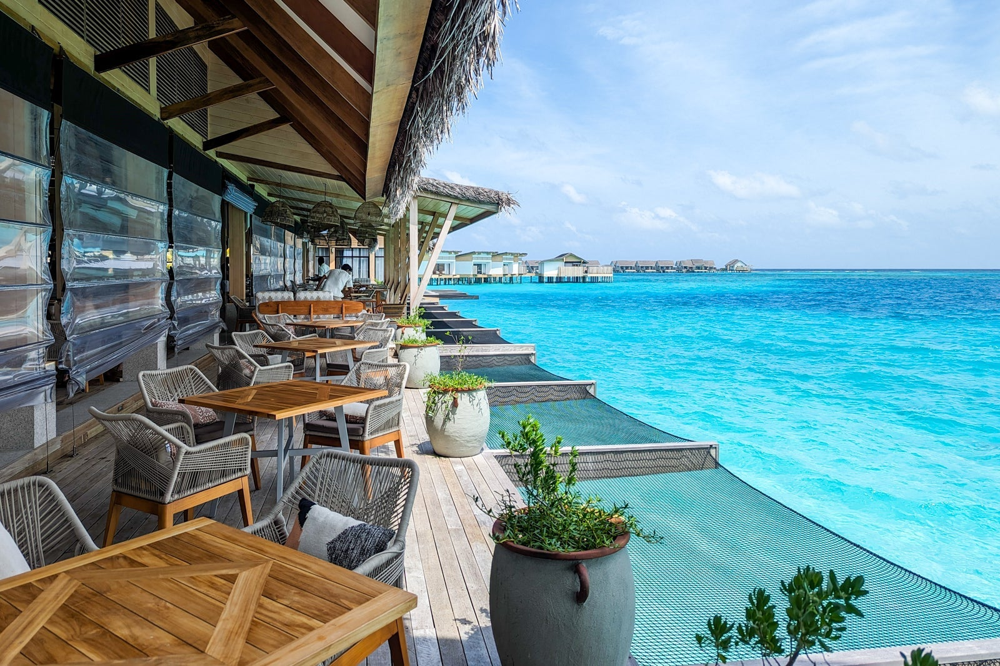

Современный курорт рядом с Мале
Hilton Maldives Amingiri Resort & Spa - удобный современный остров для семей, пар и первой поездки на Мальдивы. Быстрый трансфер делает его практичным вариантом для коротких программ.
Курорт сочетает виллы с бассейнами, понятный сервис Hilton, семейную инфраструктуру, SPA и рестораны без сложной логистики.
- Адрес
Amingiri Island, North Male Atoll
- Телефон
по запросу
- Трансфер
скоростной катер от Velana
- Формат
пляжные и водные виллы с бассейнами





Понятный семейный формат
Рестораны международной кухни, бары и гибкие планы питания делают отель удобным для семей и гостей, которым важна простая организация отдыха.
SPA, дети и океан
SPA, детский клуб, подростковая зона, водные активности, фитнес и пляжные сценарии помогают собрать комфортную программу на каждый день.
Для первого знакомства с Мальдивами
Хороший выбор для семей с детьми, пар и гостей, которым важны новая инфраструктура, быстрый трансфер и предсказуемый сервис.